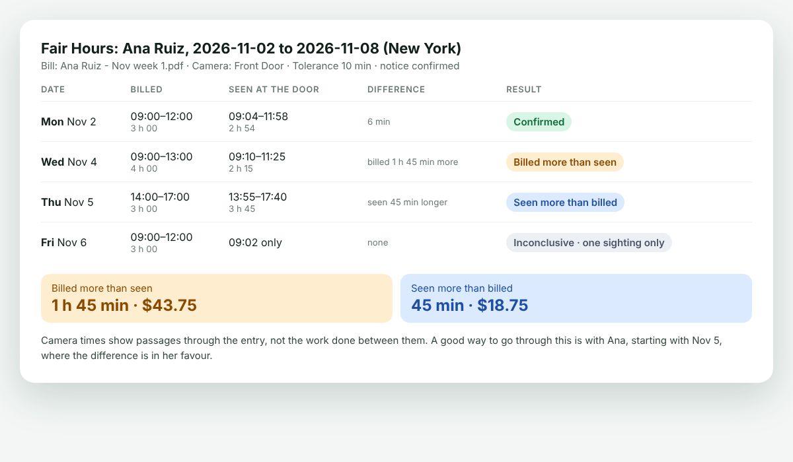

Did the hours on the bill happen at your door? A Uliya Skill for UGREEN AI NAS · Track: Open Innovation
Fair Hours checks a home helper’s hourly bill against the times the household’s own entry cameras recognised that helper, visit by visit, in both directions, on the NAS.
Households paying cleaners, nannies, dog walkers or home-care aides by the hour (2.2 million US domestic workers alone). Weekly bills get trusted blindly or checked against paper logs. Medicaid must electronically verify home-care visits (21st Century Cures Act); private payers have nothing. Errors run both ways: helpers also forget to bill time.
“Check Ana’s invoice against the front door camera.” Fair Hours reads the bill, pulls only Ana’s recognised arrivals and departures, and fixed rules give each visit one result: Confirmed, Billed more than seen, Seen more than billed, Not seen, Inconclusive, or Seen, not billed. Totals show both directions side by side, priced at printed rates, plus bill arithmetic errors. No bill? It drafts a timesheet for both sides to confirm.

Notice confirmed → cameras and registered name checked → bill found and read (OCR for photos) → helper’s events → anonymous passages for doubtful dates → rules → report → optional approved save.
General assistants eyeball timelines and guess. Fair Hours gives every doubt to the helper: an unrecognised person near the door, a camera gap or a cut-off list means Inconclusive, never Not seen. On our bench, the same model without these rules made 8 harmful calls; with them, 0. Cloud tools would need home footage uploaded; here faces, bills and reports stay local.
security-monitor-agent: ug-surveillance cameras, faces (step 1), event-timeline (4–5), event-evidence (7). file-agent: ug-filesystem find (2). document-agent: ug-document extract (3). photo-agent: ug-photo vision-ocr (3). knowledge-agent: ug-knowledge save-text, approval-gated (8).
Markdown-only orchestration: nine single-quoted delegate templates with UPPER_CASE slots filled from confirmed values; each step uses only real upstream results. An 11-rule table decides every result, in whole-minute arithmetic. All five delegation states are handled per step. Inputs: mode, registered name, period, bill or typed hours, entry cameras, tolerance, agreed terms. Permissions: read-only except one approved save; notice gate; entrance cameras only; other people counted without names; snapshots only on request. Models: the NAS experts’ local models; Fair Hours itself calls no external service.
Built: the Skill package (SKILL.md, six references), passing the official checker with 0 errors, 0 warnings; an offline bench of 35 cases (6 written blind) with mock experts and outcomes fixed before runs. Not built: any NAS run. Needs NAS testing: parameter behaviour, outage warnings, unknown-name responses, departure recognition.
Core 1: a PDF bill with one planned line per result, an arithmetic error, and the approved save. Core 2: Draft mode, then a photographed handwritten timesheet via OCR. Edge: camera disabled 30 minutes, and a face-turned-away walk-past; both must be Inconclusive, never Not seen.
Needs entry cameras and the helper registered as a known face. Cameras show passages, not work. Recognition misses produce Inconclusive. Workplace camera rules vary. Uliya’s orchestration model follows user settings. Catalog parameter behaviour is unverified until NAS access.
Entrant: Oscar Arturo Ariza-Vargas (individual entrant, Colombia). Originality: The Skill and its core workflow were newly developed during the UGREEN Hackathon 2026 on AI NAS. No previously developed Skill or submission material is reused. Signature: /s/ Oscar Arturo Ariza-Vargas, 2026-11-15.
Third-party components: None in the Skill package, which contains only original Markdown. Development tools: the UGOS Skill Creation Tool (uliya-skill-kit 0.7.3, UGREEN Hackathon Starter Kit, used under its user agreement) for the capability catalog and the official checker. Claude (Anthropic) was used as an AI assistant for drafting and for the off-device test bench.
Sources: Economic Policy Institute, Domestic workers chartbook (2.2 million US domestic workers, 2019). 21st Century Cures Act §12006 (electronic visit verification for Medicaid personal care and home health visits).